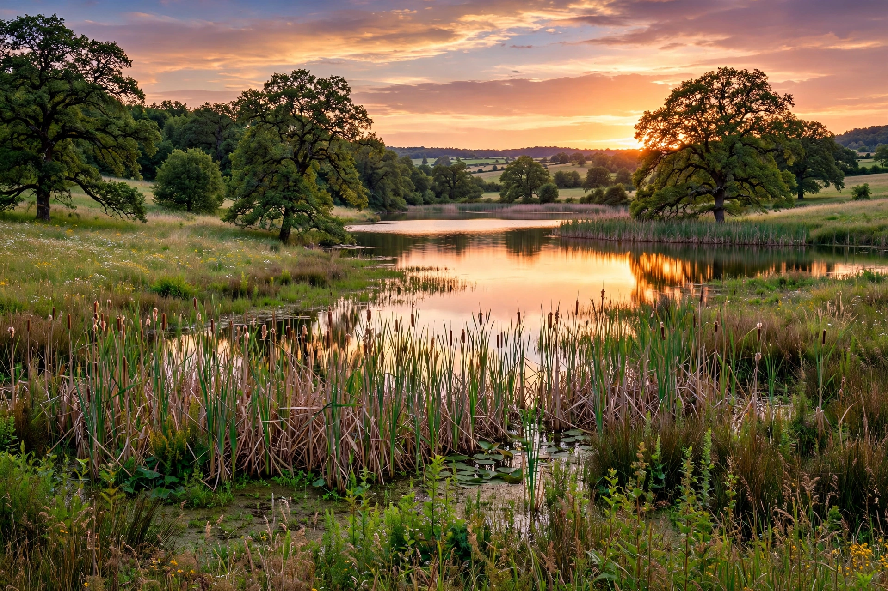

The Brenne is a natural region in west-central France, in the Indre department, historic province of Berry, famous as the "land of a thousand lakes" (pays des mille étangs).

A plateau of ponds, heath, meadows and forest, many ponds created in the Middle Ages for fish farming. Core is protected as Brenne Regional Natural Park (Parc naturel régional de la Brenne), established 1989.
A Ramsar wetland of international importance, home to whiskered terns, purple herons, European pond turtles, orchids, and migrating birds. Rivers Creuse and Claise cross the region. See Indre, Regional natural parks of France.